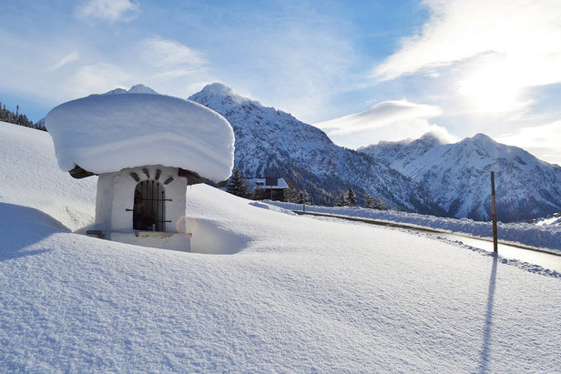
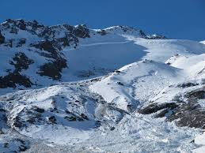
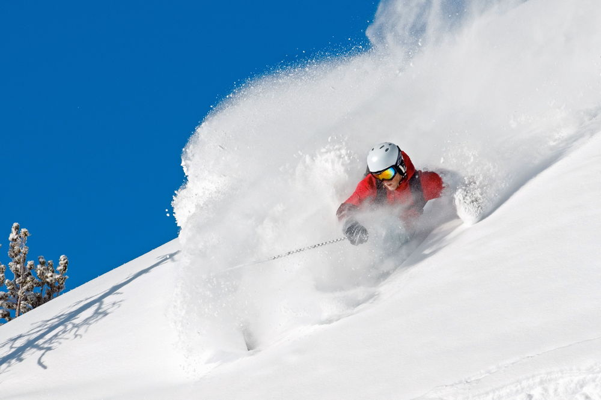
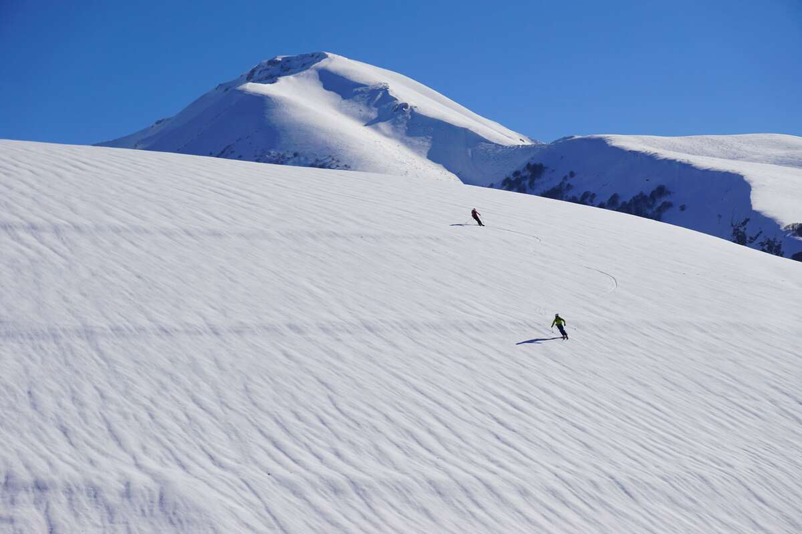
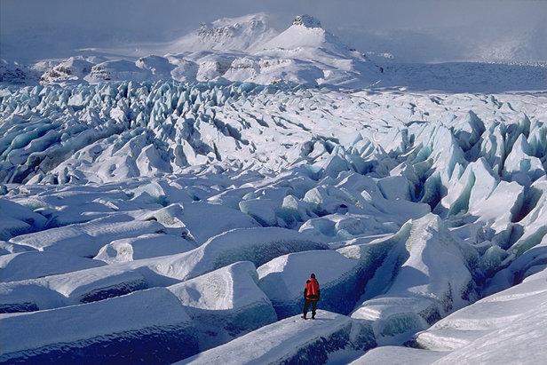
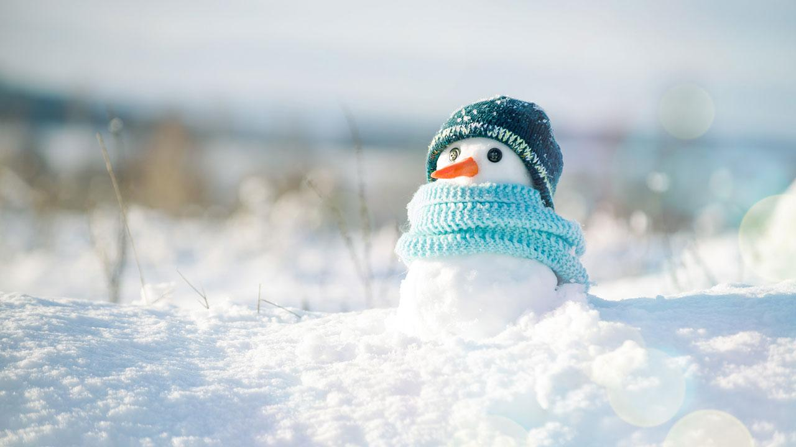
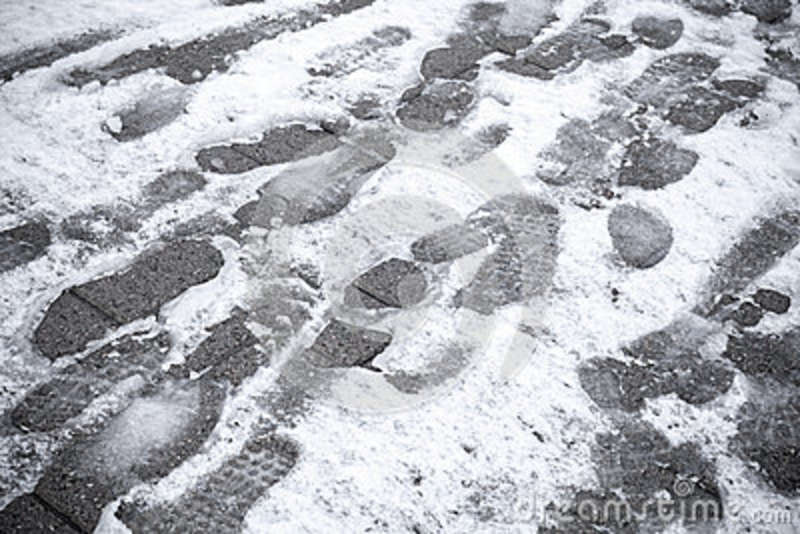
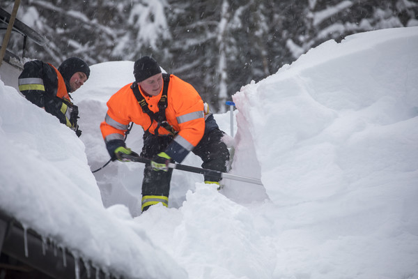
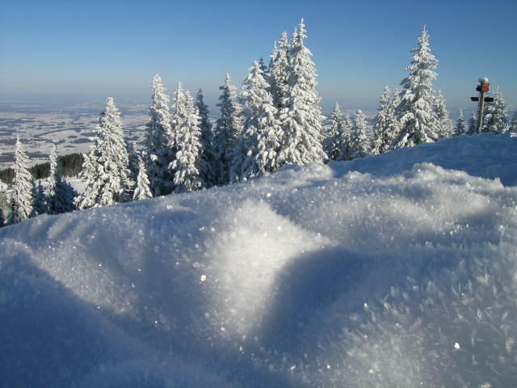

SCHNEE.SCHNEEIGER.AMSCHNEEIGSTEN.
NEUSCHNEE
ALTSCHNEE
PULVERSCHNEE
FIRN
GLETSCHEREISSCHNEE
PAPPSCHNEE
NASSSCHNEE
EISLAMELLE
WILDSCHNEE
SCHNEEARTEN
Neuschnee

Ist in seiner Kristallform noch erkennbar und jünger als 24 Stunden.
Altschnee

Ist älter und hat seine ursprüngliche Form schon verloren.
Pulverschnee

Ist leicht und locker und fällt bei besonders niedrigen Temperaturen.
Firn

Ist durch Schmelz- und Gefriervorgänge stark verdichteter Altschnee.
Gletschereisschnee

Heißt der weiter verdichtete Firn.
Pappschnee

Ist feucht und etwas schwerer.
Nassschnee

Ist stark durchnässt, es rinnt Wasser heraus.
Eislamelle

Ist eine dünne Eisschicht an der Schneeoberfläche.
Wildschnee

Wird extrem lockerer Neuschnee genannt.